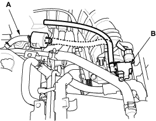

DTC P0171: Fuel System Too Lean
DTC P0172: Fuel System Too Rich
NOTE: If some of the DTCs listed below are stored at the same time as DTC P0171 and/or P0172, troubleshoot those DTCs first, then recheck for P0171 and/or P0172.
P0010, P0011: VTC System
P0107, P0108: Manifold Absolute Pressure (MAP) sensor
P0135: Primary Heated Oxygen Sensor (Primary HO2S) (Sensor 1) heater
P0137, P0138: Secondary HO2S (Sensor 2)
P0141: Secondary HO2S (Sensor 2) heater
P0340, P0344: CMP Sensor
P1259: VTEC System
- Check the fuel pressure (see page 11-116).
Is fuel pressure OK?
YES - Go to step 2.
NO - Check these items:
- If the pressure is too high, replace the fuel pressure regulator, refer to the 2001 Civic Shop Manual (see page 11-138).

- If the pressure is too low, check the fuel pump, the fuel feed pipe, the fuel filter and replace the fuel pressure regulator, refer to the 2001 Civic Shop Manual (see page 11-138).
- Start the engine. Hold the engine at 3,000 rpm (min-1) with no load (in Park or neutral) until the radiator fan comes on.
- Check the primary HO2S (Sensor 1) output with the scan tool.
Does it stay at less than 0.3 V or more than 0.6 V?
YES - Replace the primary HO2S (Sensor 1).
NO - Go to step 4.
- Turn the ignition switch OFF.

- With a vacuum pump (A), apply vacuum to the evaporative emission (EVAP) canister purge valve (B) from the evaporative emission (EVAP) canister side.

Does it hold vacuum?
YES - Go to step 6.
NO - Replace the EVAP canister purge valve.
- Turn the ignition switch ON (II).
- Check the manifold pressure with the scan tool.
Does it indicate atmospheric pressure?
YES - Go to step 8.
NO - Replace the MAP sensor.
- Start the engine.
- Check the MAP sensor with the scan tool.
Is a MAP of 40.0 kPa (300 mmHg, 12.0 in.Hg) or less indicated within 1 second after starting the engine?
YES - Check the valve clearance and adjust if necessary. If the valve clearance is OK, replace the injector.
NO - Replace the MAP sensor.